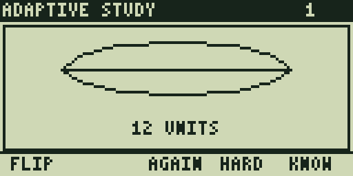
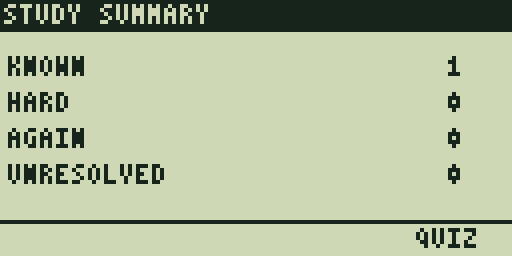
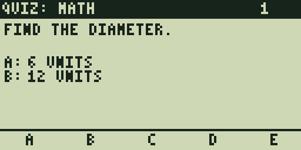
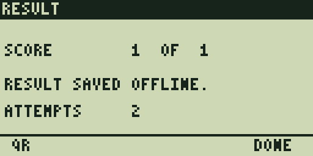
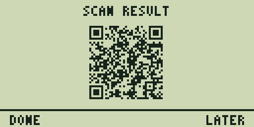

Both scenarios passed every configured text, transition, recovery, and Version-5/M QR assertion. These are complete 128×64 framebuffers captured by the repository’s MAME TI-86 scenario harness after a real TI-OS launch and virtual Graph Link installation. Each card retains the framebuffer digest recorded by the acceptance report.
Installed study
Cold code entry through a graphic card, answer, summary, quiz, durable result, and QR.
Cold launch: Enter Code
01-enter-code
frame SHA-256 40bc9b51c2d3acec010152e88f1fbc5bcc472f6f1f30807ab51e29e4e3d178f6 · PC 63190
First Digit
02-first-digit
frame SHA-256 6ae8f2e885a49e19aa4307b86426fe5aabb3577989d6c2ff31609fc91472ad71 · PC 63185
Second Digit
03-second-digit
frame SHA-256 2cfb1521f5ae67999e76e43b4318d51d07111d4ce9c61c82f5a2c9f43bc2f321 · PC 63185
Third Digit
04-third-digit
frame SHA-256 7a76e6e0e25f01fac81d5505fe8071b23015d71a0ecafce1a29d08908900ee0d · PC 63188
Fourth Digit
05-fourth-digit
frame SHA-256 a5b727539df347c95bad8c1a2ac971ed91a4e886e9ffbefb6fa788cae18e2cb5 · PC 63192
Fifth Digit
06-fifth-digit
frame SHA-256 2e6765ae98aca90a579132fb5054b0c734eb57df78ee9fce4b6a156f4766501d · PC 63172
Digit six opens the resolved study
07-graphic-card-front
frame SHA-256 623509154009951f657c0c3658995f33c942044162fe6759459a3d265de4332b · PC 62083

Graphic flashcard answer
08-graphic-card-back
frame SHA-256 7636fdb8c97750392205d36e9dd501081c13fee976288afb35a0fcd1402798b4 · PC 62078
Study summary
09-study-summary
frame SHA-256 90290eb167fb3623b289b6ac2abad10f6f6e8de0b44bd5ca1accd2d57a4c7504 · PC 62091
Question and choices together
10-quiz-question
frame SHA-256 f49d495429bd8cf020045001ed9213066f08e321f914ce793f28a65f1d961fdb · PC 62076
EXIT returns to study and counts the quiz attempt
11-restudy-after-quiz-exit
frame SHA-256 623509154009951f657c0c3658995f33c942044162fe6759459a3d265de4332b · PC 62075
Restudy remains fully interactive
12-restudy-answer
frame SHA-256 7636fdb8c97750392205d36e9dd501081c13fee976288afb35a0fcd1402798b4 · PC 62084

Second study completion
13-second-study-summary
frame SHA-256 90290eb167fb3623b289b6ac2abad10f6f6e8de0b44bd5ca1accd2d57a4c7504 · PC 62075

Second counted quiz attempt
14-second-quiz-attempt
frame SHA-256 f49d495429bd8cf020045001ed9213066f08e321f914ce793f28a65f1d961fdb · PC 62074

Result queued before success
15-durable-result
frame SHA-256 131aaa4e4ce58e65cfec4ef4c73804683a7af82ba71e831996e081d68eb74088 · PC 62075

Offline Version-5/M result QR
16-result-qr
frame SHA-256 baebda494a99a3f6be46d5339c961607ca457bea8a807f4cb2e0b90d8e739c0a · PC 59287
Study not loaded yet
A code whose immutable study module is not installed enters one-time relay recovery without losing local state. The calculator creates its durable entry request, waits for the relay, and can pause back to Enter Code without discarding local state.
Unresolved code
01-missing-code-ready
frame SHA-256 33ea0d91259d19e0bd8d88b9a8d75bed915dcb8c361ef3dc65975321ffbf0237 · PC 63185
Connect the relay
02-connect-relay
frame SHA-256 d2e18b747aabe41e967c66a65f4b053a687f4b35f65b0c808eb4879136fccfe0 · PC 58274
Live relay search indicator
03-link-active
frame SHA-256 c3cf1cf23a03faec3331a69e6a9cabf67e0c2feb205029059e5faefcec98b645 · PC 58295
Safe paused recovery
04-sync-paused
frame SHA-256 5d3a638a89900978e934104e1806d21e4992016a32336d970b0cd90145e58dc2 · PC 61319
Return to Enter Code
05-return-to-code
frame SHA-256 40bc9b51c2d3acec010152e88f1fbc5bcc472f6f1f30807ab51e29e4e3d178f6 · PC 63180